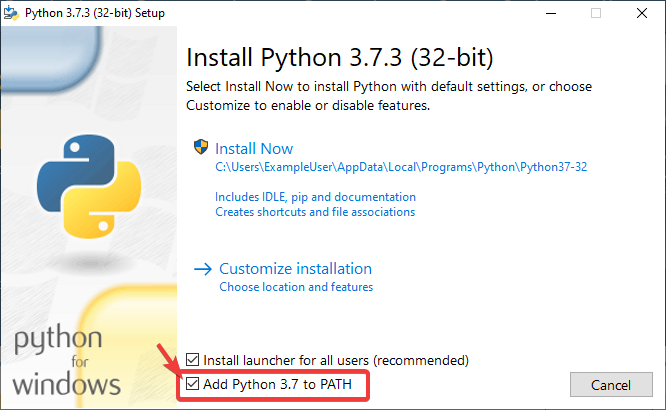

Build Instructions
This document contains information on how to build the HTML, PDF, and EPUB versions of the frc-docs site. frc-docs uses Sphinx as the documentation generator. This document also assumes you have basic knowledge of Git and console commands.
Prerequisites
Ensure that Git is installed and that the frc-docs repository is cloned by using git clone https://github.com/wpilibsuite/frc-docs.git.
Text Editors / IDE
For development, we recommend that you use VS Code along with the reStructuredText extension. However, any text editor will work.
Windows
Note
MikTeX and rsvg-convert are not required for building HTML, they are only required for Windows PDF builds.
MiKTeX (Only needed for PDF builds)
Ensure that Python is in your Path by selecting the Add Python to PATH toggle when installing Python.
Once Python is installed, open up Powershell. Then navigate to the frc-docs directory. Run the following command: pip install -r source/requirements.txt
Install the missing MikTex packages by navigating to the frc-docs directory, then running the following command from Powershell: mpm --verbose --require=@miktex-packages.txt
Linux (Ubuntu)
$ sudo apt update
$ sudo apt install python3 python3-pip
$ python3 -m pip install -U pip setuptools wheel
$ python3 -m pip install -r source/requirements.txt
$ sudo apt install -y texlive-latex-recommended texlive-fonts-recommended texlive-latex-extra latexmk texlive-lang-greek texlive-luatex texlive-xetex texlive-fonts-extra dvipng librsvg2-bin
Building
Open up a Powershell Window or terminal and navigate to the frc-docs directory that was cloned.
PS > cd "%USERPROFILE%\Documents"
PS C:\Users\Example\Documents> git clone https://github.com/wpilibsuite/frc-docs.git
Cloning into 'frc-docs'...
remote: Enumerating objects: 217, done.
remote: Counting objects: 100% (217/217), done.
remote: Compressing objects: 100% (196/196), done.
remote: Total 2587 (delta 50), reused 68 (delta 21), pack-reused 2370
Receiving objects: 100% (2587/2587), 42.68MiB | 20.32 MiB/s, done.
Receiving deltas: 100% (1138/1138), done/
PS C:\Users\Example\Documents> cd frc-docs
PS C:\Users\Example\Documents\frc-docs>
Lint Check
Note
Lint Check will not check line endings on Windows due to a bug with line endings. See this issue for more information.
It’s encouraged to check any changes you make with the linter. This will fail the buildbot if it does not pass. To check, run .\make lint
Link Check
The link checker makes sure that all links in the documentation resolve. This will fail the buildbot if it does not pass. To check, run .\make linkcheck
Image Size Check
Please run .\make sizecheck to verify that all images are below 500KB. This check will fail CI if it fails. Exclusions are allowed on a case by case basis and are added to the IMAGE_SIZE_EXCLUSIONS list in the configuration file.
Redirect Check
Files that have been moved or renamed must have their new location (or replaced with 404) in the redirects.txt file in source.
The redirect writer will automatically add renamed/moved files to the redirects file. Run .\make rediraffewritediff.
Note
if a file is both moved and substantially changed, the redirect writer will not add it to the redirects.txt file, and the redirects.txt file will need to be manually updated.
The redirect checker makes sure that there are valid redirects for all files. This will fail the buildbot if it does not pass. To check, run .\make rediraffecheckdiff to verify all files are redirected. Additionally, an HTML build may need to be ran to ensure that all files redirect properly.
Building HTML
Type the command .\make html to generate HTML content. The content is located in the build/html directory at the root of the repository.
Building PDF
Warning
Please note that PDF build on Windows may result in distorted images for SVG content. This is due to a lack of librsvg2-bin support on Windows.
Type the command .\make latexpdf to generate PDF content. The PDF is located in the build/latex directory at the root of the repository.
Building EPUB
Type the command .\make epub to generate EPUB content. The EPUB is located in the build/epub directory at the root of the repository.
Adding Python Third-Party libraries
Important
After modifying frc-docs dependencies in any way, requirements.txt must be regenerated by running poetry export -f requirements.txt --output source/requirements.txt --without-hashes from the root of the repo.
frc-docs uses Poetry to manage its dependencies to make sure builds are reproducible.
Note
Poetry is not required to build and contribute to frc-docs content. It is only used for dependency management.
Installing Poetry
Ensure that Poetry is installed. Run the following command: pip install poetry.
Adding a Dependency
Add the dependency to the [tool.poetry.dependencies] section of pyproject.toml. Make sure to specify an exact version. Then, run the following command: poetry lock --no-update.
Updating a Top-Level Dependency
Update the dependency’s version in the [tool.poetry.dependencies] section of pyproject.toml. Then, run the following command: poetry lock --no-update.